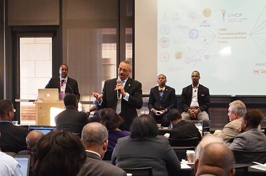
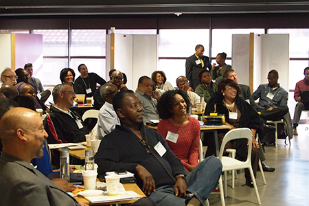
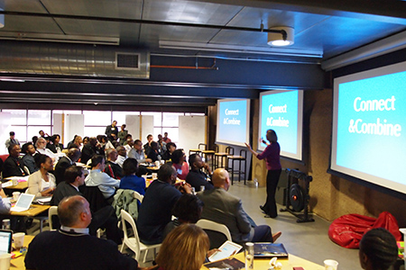

Leaders and faculty from historically black colleges and universities around the country gathered at Stanford University Oct. 29-Nov. 1, 2013, at the first annual UNCF HBCU Innovation Summit to share ideas about how to encourage students, especially underrepresented minorities, to pursue careers in STEM fields. The summit was hosted by the United Negro College Fund (UNCF), Epicenter, and the Stanford Center for Professional Development (SCPD).

Carlton E. Brown, president of Clark Atlanta University, speaks to the attendees of the UNCF HBCU Innovation Summit during a session on Oct. 31, 2013. Photos by Laurie Moore. View more photos »
By Tom Abate, Stanford Engineering
Article from engineering.stanford.edu
Visiting educators from historically black colleges and universities gathered to discuss how to boost student interest in science and technology careers.
Inspire students to dream, then help them learn by doing and they will embrace science, technology, engineering and math, Stanford President John Hennessy told officials from 17 historically black colleges and universities (HBCU) who met on campus on Oct. 31.
The visiting educators were taking part in the United Negro College Fund's HBCU Innovation Summit, aimed at finding ways to get more young people, particularly underrepresented minorities, to pursue careers in science, technology, engineering and math (STEM) fields. The first-of-its-kind gathering brought together leaders from institutions such as Spelman College, Clark Atlanta University and Howard University that have traditionally focused on educating African Americans.
The program, which ended with a Friday afternoon visit to Google, was organized in part by the National Center for Engineering Pathways to Innovation (Epicenter) and the Stanford Center for Professional Development, both at Stanford University, with support from the National Science Foundation, among other funders.

Summit participants spent a day at Stanford's Hasso Plattner Institute of Design (d.school) and attended sessions on creativity, student engagement and innovative spaces.
"We try to create opportunities for students to think creatively, to think outside the box," Hennessy said, abandoning the podium to get closer to 80 educators facing him in a semicircle of tables and chairs. "We think that kind of skill can be built in any person who has the drive, who has the excitement, who wants to change the world."
Dean of Engineering Jim Plummer spoke after Hennessy, and focused on the nuts and bolts of attracting students to STEM fields. For starters, he urged his fellow educators to help change common practices that have unintentionally turned students off, such as asking high schools students to declare their interest in STEM careers.
"We actually lose a lot of young people who could be potential engineers and potential scientists and potential mathematicians because they are asked to make that choice as seniors in high school," Plummer said.
Lunch at the Facebook campus. Top row, from left: Chad Womack, National Director of STEM Initiatives and the UNCF-Merck Fellowship Program, UNCF; David Wilson, President of Morgan State University; Carlton E. Brown, President of Clark Atlanta University; and Karl Reid, Senior Vice President, UNCF. Bottom row, from left: Maxine Williams, Global Head of Diversity at Facebook; Michael L. Lomax, President and Chief Executive Officer, UNCF; Beverly Tatum, President of Spelman College; and Kenneth Tolson, President’s Board of Advisors, White House Initiative on HBCUs.
This fall, for example, computer science Professor Yoav Shoham is teaching a freshman seminar titled Can Machines Know? Can Machines Feel? Plummer said. "If I were a freshman, that would be an interesting seminar."
Other examples include summer courses that allow undergraduates to build a jet engine and a program that offers them entry-level positions in Stanford research labs. Plummer said such experiences whet students' intellectual appetites and give them extra incentive to take the difficult courses in math and science they would need to succeed in STEM.

Plummer and Hennessy both talked about Stanford Engineering's Hasso Plattner Institute of Design, or d.school, which gives students with backgrounds in engineering, business and social sciences a chance to collaborate on projects. Hennessy cited one d.school team that took a class titled Design for Extreme Affordability, in which students were challenged to find a way to help premature infants in poor countries where it was tough to find a $25,000 incubator to keep them warm. The students' solution, Hennessy said, was to create a baby sleeping bag with an easy-to-heat wax insert that could keep these at-risk infants warm for up to eight hours at a cost of just $25."That's the kind of social entrepreneurship we're talking about," Hennessy said.
Professor Tom Byers, co-director of the Stanford Technology Ventures Program and director of Epicenter, introduced Hennessy and Plummer in his capacity as a co-host of the various summit activities.
"I'm ecstatic," said Rose Glee, director of the office of technology transfer at Florida A&M University. "The ideas and the best practices I'm hearing about, and the synergy of sharing all this with my colleagues, has made this such an energizing experience."
At a time of increasing awareness of the need to boost minority representation in STEM fields, the gathering was designed to show how historically black colleges and universities can help.
"Thirty-three percent of recent African American STEM PhDs received their undergraduate degrees from HBCUs, and eight of the 10 top colleges whose African American graduates went on to get PhDs in science were HBCUs," said Michael L. Lomax, president and chief executive officer of the United Negro College Fund.
Summit attendees exemplified what HBCUs are already doing to channel their students into STEM careers. Senior Associate Vice Chancellor Curtis Barnabas Charles of Fayetteville State University described the Center for Defense and Homeland Security at his institution, which is near the military complex at Fort Bragg, N.C.
The center focuses on the fact that tens of thousands of Defense Department scientists and engineers are nearing retirement. "We cannot outsource national security jobs," Charles said. "To us, that's a market for our students."
The summit also afforded HBCU educators a chance to make connections that will benefit their students.
Eric Sheppard, dean of the School of Engineering and Technology at Virginia's Hampton University, said he hopes to create ongoing relationships that will allow him to place his students in graduate study or industrial programs. With about 5,000 students, over 90 percent of them black, Sheppard is seeking outside assistance to incubate his 130-person undergraduate-only engineering program.
"I need to get my students into the pipeline," Sheppard said.
Tom Abate writes about the students, faculty and research of the School of Engineering.